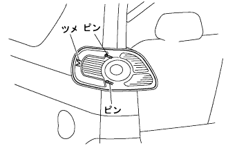
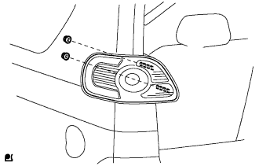

Rear conversion lamp Assy LH installation |
| 1. Rearcom vination lamp Assy LH installation |
Attach each valve socket and tail lamps (rear terminal lamp) valve.
|   |
Connect the connector, combine the claws and pins on the side, and attach the tail lamp (rear terminal lamp) Assy LH with two nuts.
| 2. Rear combination lamp service cover LH installation |